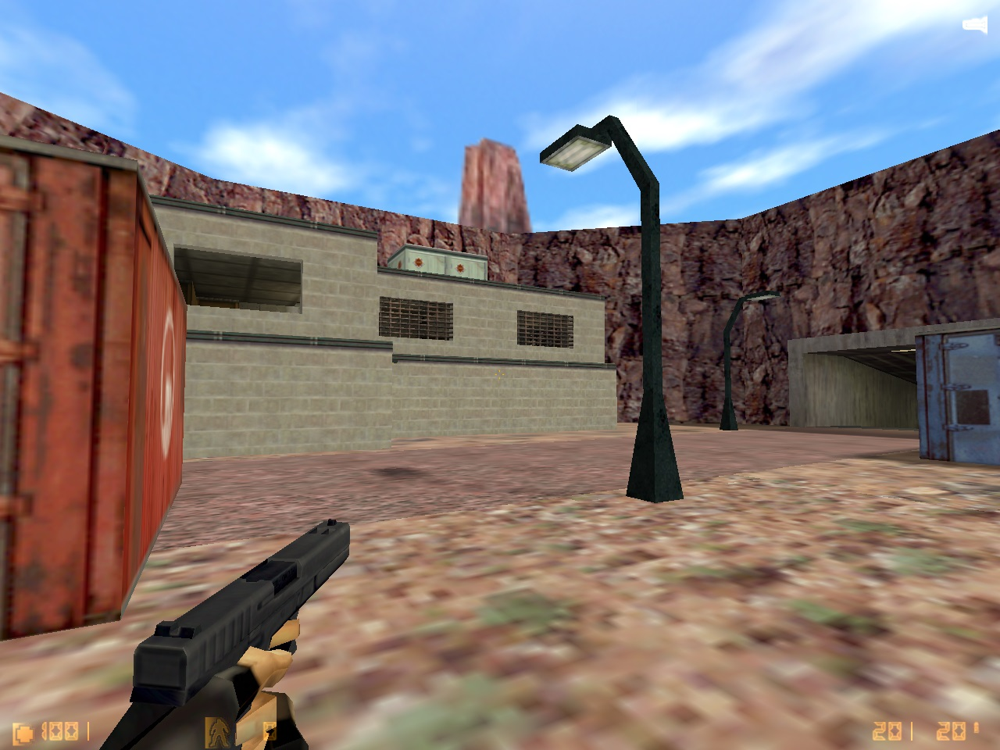
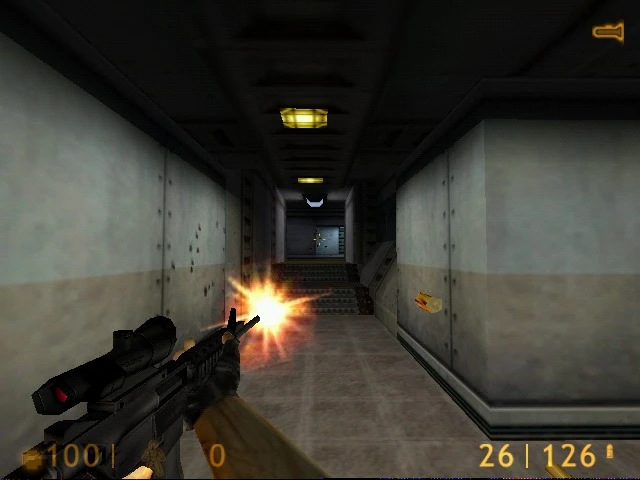
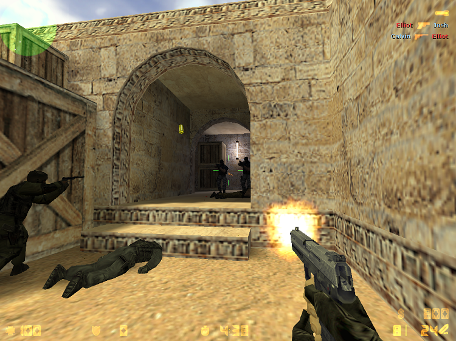

У 1999 році два ентузіасти — канадець Мін Лі (відомий як Gooseman) та американець Джесс Кліфф — взялися за створення власної модифікації для культового шутера Half‑Life. Їхньою метою було зробити тактичний шутер із реалістичними елементами — щось зовсім інше на тлі тодішніх Quake чи Unreal Tournament. Мін Лі відповідав за моделювання та програмування, а Джесс Кліфф опікувався тестуванням, графікою, звуком і гейм-дизайном. 15 березня 1999 року з'явилася назва — Counter‑Strike, а невдовзі були запущені перші сайти про новий онлайн-шутер. В основу гри лягла проста, але геніальна ідея: протистояння двох команд — терористів і спецназу — у коротких напружених раундах. З кожною новою бета-версією гра стрімко еволюціонувала. З кожною новою бета-версією гра стрімко еволюціонувала. У Beta 3.0 арсенал поповнився культовою гвинтівкою M4A1, а легендарний автомат AK-47 дебютував трохи пізніше — у Beta 4.0. Саме ця четверта бета-версія представила світу абсолютно новий сценарій з мінування та розмінування бомби (карти з префіксом de_), який згодом став головним світовим кіберспортивним стандартом, а разом з ним народилася й культова карта de_dust. До моменту виходу Beta 7.0 восени 2000 року, гра вже отримала систему керування транспортом, покращену балістику та мільйонну армію фанатів, що й змусило компанію Valve діяти негайно.

Середина 2000-2003 року
Успіх модифікації привернув увагу компанії Valve, творців Half‑Life. Гейб Ньюелл оцінив колосальний потенціал проекту. У 2000 році Valve викупила права на інтелектуальну власність Counter‑Strike, а Мін Лі та Джесс Кліфф отримали роботу в компанії. 8 листопада 2000 року відбувся реліз першої офіційної комерційної версії — Counter‑Strike 1.0. Це перетворило аматорський мод на повноцінний світовий хіт. Після тріумфального комерційного старту гра почала розвиватися шаленими темпами, переживаючи десятки дрібних оновлень та знакових патчів. Версії 1.1, 1.3 та 1.5 поступово відточували ігровий баланс: розробники змінювали фізику стрибків, додавали нову зброю, покращували мережевий код та створювали карти, які згодом стали класикою. Навколо Counter-Strike сформувалася перша глобальна кіберспортивна екосистема з великими міжнародними турнірами, такими як CPL та WCG.

Кінець 2003-2026 року
Епоха перших версій гри завершилася тодІ, коли свІт побачила фІнальна та найбІльш культова модифІкацІя — Counter-Strike 1.6. ЇЇ офІцІйний релІз, що вІдбувся 12 вересня 2003 року, назавжди вписав імена розробникІв-ентузІастІв в історІю кІберспорту. Ця подІя довела всьому св Іту: щира пристрасть сп Ільноти здатна створити головний тактичний шутер планети.

Через два десятиліття Counter-Strike 1.6 остаточно набула статусу безсмертної класики. Вона витримала конкуренцію з боку графічно досконаліших наступників — CS:Source та CS:GO, залишаючись головною турнірною дисципліною аж до 2012 року. Сьогодні, через 23 роки після тріумфального релізу, оригінальний шутер живе завдяки відданій спільноті, приватним серверам та ретро-турнірам. Культовий геймплей, де вирішує лише чистий скіл, перетворив 1.6 на справжні «шахи» у світі відеоігор, а її унікальний візуальний стиль та звуки назавжди стали культурним кодом для мільйонів геймерів по всьому світу.